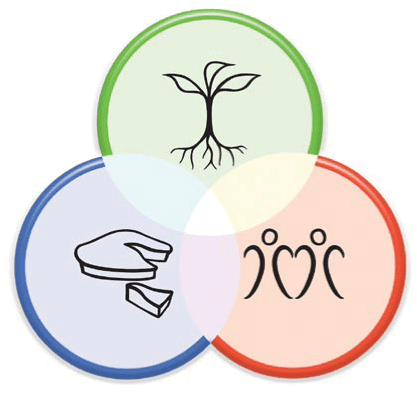

class: center, middle # Rebuilding with Permaculture Ethics --- <style> #ethics { float: right; } </style>  # Permaculture Ethics ## Earth Care Rebuild natural capital ## People Care Look after self, kin and community ## Fair Share Set limits and redistribute surplus --- #